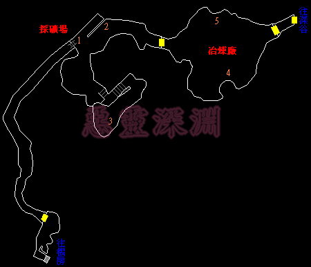
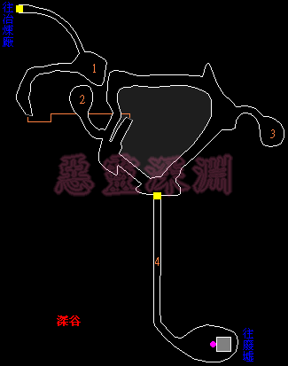
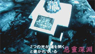

|
惡靈古堡～惡靈古堡４----地圖攻略～4-2
|
|
攻略內容以Normal為主，地圖上的紫色圓點●表示高價寶物的位置 ，標綠色的道具則是過關必須的重要道具。
 從升降梯出來，這裡有武器商人、打字機，還有file Luis的Memo2。 購物指南（new）：
經過長長的採礦隧道後，在採礦場有數名村民，可以利用編號1處的爬梯使用小刀戰法，不過要小心會拋擲武器和炸藥的村民。去 拉下編號2處的把手，讓礦車滑下，沒想到礦車卻卡住了，需要去編號3處重啟電源，然後回去再拉一次把手， 小心電鋸男和從隧道 方向來的村民們。礦車下降後拿取爆破用的炸藥，將炸藥使用在旁邊的大石頭上，炸開通路，記得離遠一點以免受傷。前往冶煉 廠。 到冶煉廠時先別接近對面的門，除了回收附近的道具外，特別注意編號4的高台還有編號5的開關，編號4的高台上有個滑輪，可以 直接滑到編號5的開關，拉下這個開關，中央地板就會打開，出現火紅的熔爐。接近出口時，出現兩個巨人，玩家可以使用高台來 引誘巨人，使巨人掉落熔爐裡，但是鎔爐只能容納一個巨人，巨人掉落後要等一段時間地板才會闔上，這段時間若是接近掉落的巨 人，有可能會被抓進去導致game over。另一個巨人就用滑輪拉開距離來戰鬥。被打倒的巨人身上會遺留15000ptas，不過掉入融爐的 就沒有了，想賺錢的話也可以不要使用熔爐。
 進入深谷，四周有一些蒼蠅人，在編號1的地方看到一個石碑，寫著「2つの光が道を開くと書かれている」（寫著兩道光使道路開 啟），看來要繼續前進就必須找到這兩道光。
 在編號2、編號3的地方都有個開關，將開關按下就會出現兩道光射向中央的門，不過在按下開關後都會出現一批蒼蠅人。如果覺 得對付蒼蠅人很吃力，可以將牠們引誘至往冶煉廠的那條小隧道，這裡高度低、通道窄，很適合對付蒼蠅人。接著按下中央門上的 開關開門，後方的道路上有數個大石頭規律的上下移動，抓準時機通過，到編號4時，牆上有個開關，可以關閉前方三個大石頭中 間的那一個，讓玩家更容易通過。最底部升降梯前方有高價寶物王冠の紋章（王冠的紋章），搭上升降梯後本章節就結束了。
疑難解答
組合─紋章の入った王冠（鑲入紋張的王冠） 27000ptas サラザール家の王冠（Sazalar家的王冠） 48000ptas 有坑洞的王冠＋王冠的寶石＋王冠的紋章＝Sazalar家的王冠，王冠的組合已經完成，可以售出了。
藍之眼，偶爾也會出現彈藥和恢復藥，是想要賺錢的玩家的好夥伴。 另外，飛在空中的蒼蠅人，防禦力比在地上時小很多喔。 未經許可禁止轉載連結 |
||||||||||||||||||
惡靈深淵Biohazard Abyss http://98.to/coolbio